Hola, buenas. empezemos con lo basico, mi nombre es Sasha Gongora y mi numero de legajo es 91425/4 y a mi trabajo lo realice sola. Ahora habiendo dejado formalidades...
En las siguientes pestañas usted vera el proceso que lleve a cabo para llegar hasta donde llegue tanto con la novela como el condenad-ujum.. digo, como el maravilloso minijuego sobre Dracula. :)
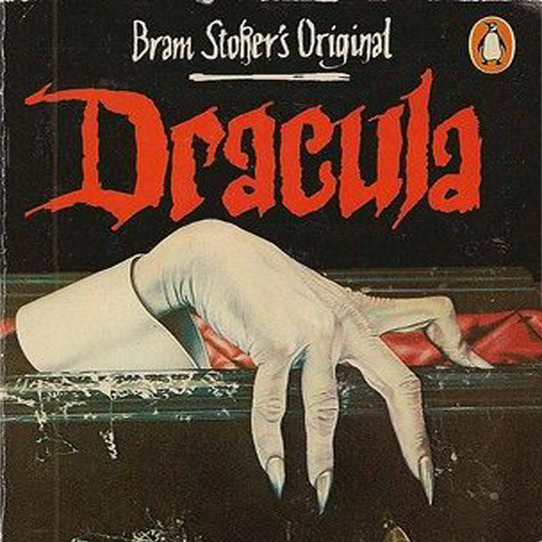
"Si usted, querido profesor, esta leyendo esto quiere decir que mis habilidades para lograr entender y entregar a tiempo en esta materia superaron hasta mis propias expectativas, desde ya agradezco mucho su enseñanza. ♡✧(◍•ᴗ•◍)✧♡."
"Las probabilidades de exista algun error dentro de este trabajo son... medias(???) midiendolo desde mi autocritica (y autodesprecio) pero le puse la mejor de las ondas y el mayor de mis esfuerzos :D ."
Todo el trabajo en sí paso por varios diseños e ideas, algunas permanecieron y otras fueron desechadas rapidamente.
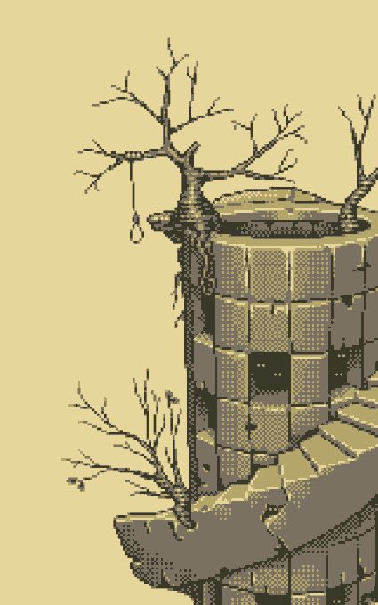
Las primeras ideas de la torre!!
El fondo de la torre del minjuego paso por muy pocas etapas, trate de hacer uso de una torre vieja y en decadencia que demostrase deterioro.
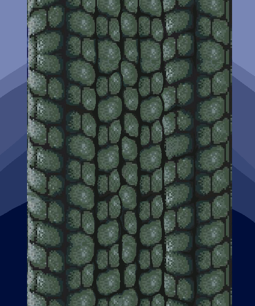
Despues de haber recopilado suficiente informacion decidi basar el diseño en un estilo tipo pixel art.
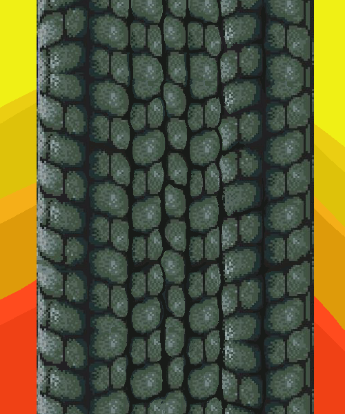
Intente que se efectue una animacion de amanecer y anochecer pero al final descarte la idea. Sin embargo mantuve el diseño de la torre.
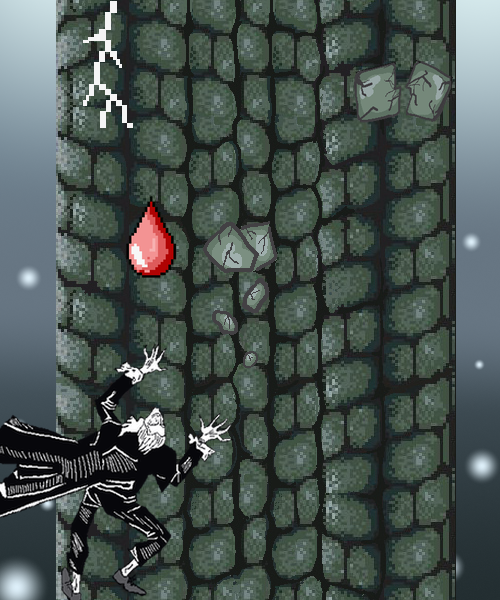
Armado ideal
Originalmente pense en como quedaria todo armado pensando a futuro, pero despues de varios inconvenientes y por falta de tiempo termine descartando algunos.
Personajes y elementos eliminados
Las primeras ideas del diseño de dracula!!
Al principio trate de basarme en una epoca mas o menos victoriana, y usar un diseño de un Dracula bastante anciano
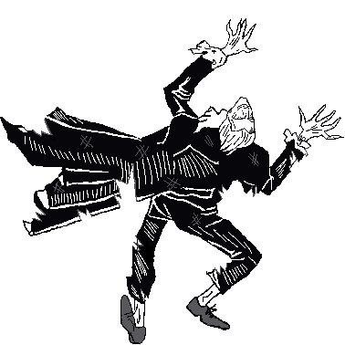
Asi como la torre, dracula iba a tener unas reacciones segun con la vida que tenia,asi hubiera lucido si perdia una vida.
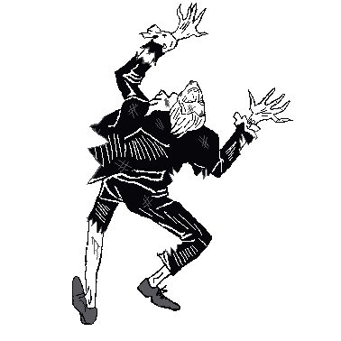
Y Asi cuando perdiese en total, dando automaticamente la pantalla de game over, sin embargo estas ideas tambien fuero desechadas.
dentro de la historia diseñe a dracula como un hombre ya mayor pero con cierto atractivo despues de analizarlo mucho, a pesar de que en el minijuego no luce igual.
A jonathan lo plasme como un joven adulto de unos 20/25 recien casado.
Y a Van helsing con vibras de profesor adulto de historia, no me pregunten el por que.
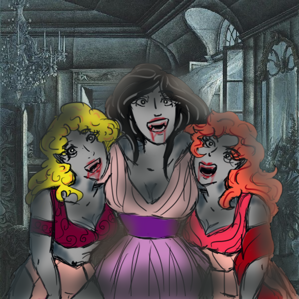
Por otra parte ni a las novias de dracula les brinde un estilo ya que consideraba que el diseño de la pelicula de Van Helsing las representaba muy bien.
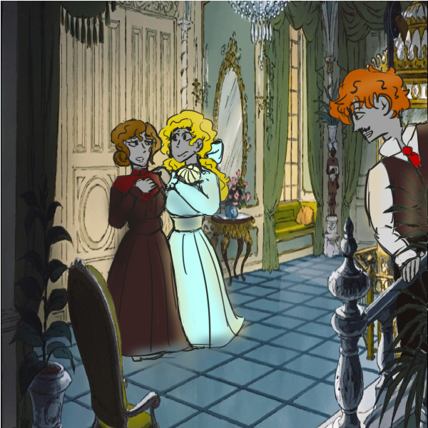
Lo mismo sucedio con Arthur, Mina y la Novia de Arthur.
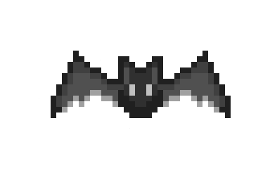
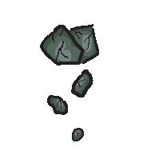
Por ultimo, hubo algunos elementos q termine descartando como los rayos, los murcielagos y una parte de los escombros.
Despues de muchos intentos, pruebas y frustraciones este fue el resultado.